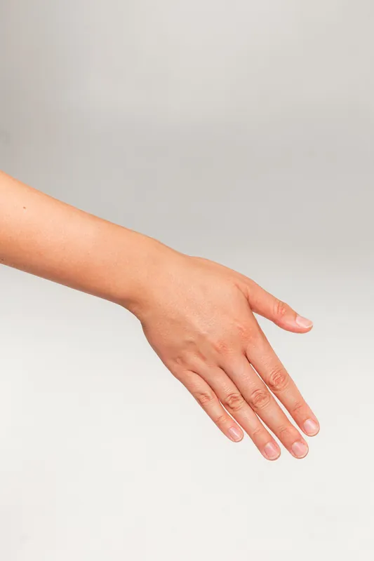
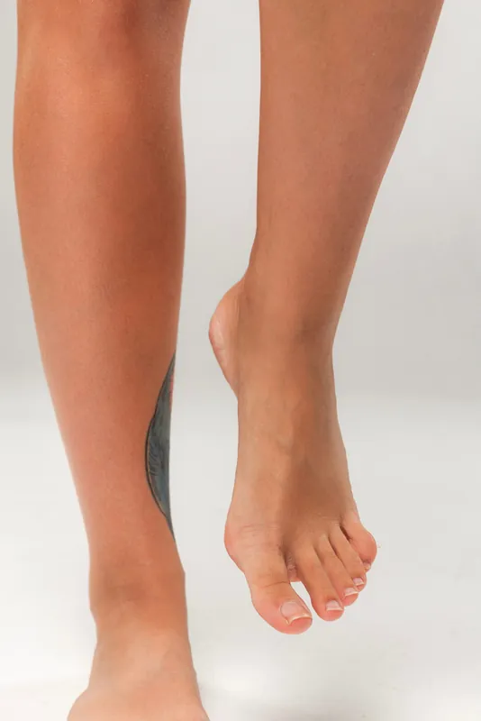
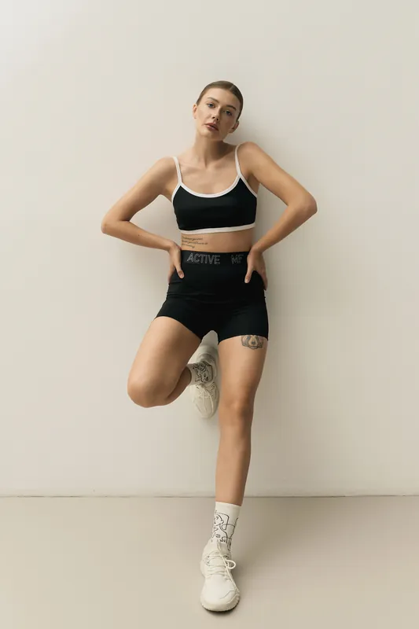
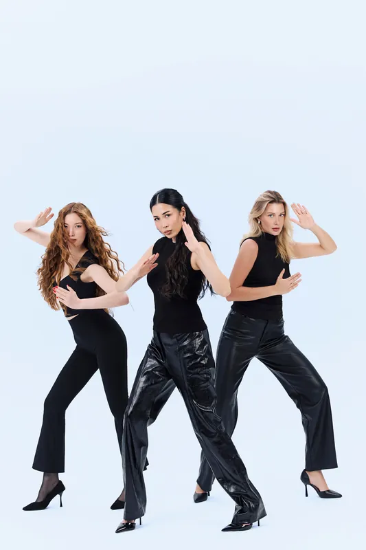
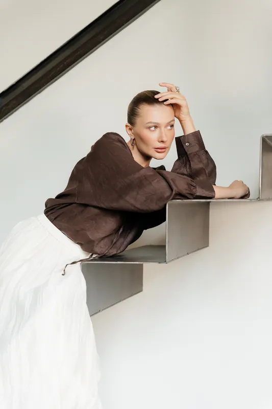

Model portfolio
Snaps
Swipe through the photos →







Snaps — video
Portfolio









Video work
Tap a cover to watch the video — here or on Instagram.


Content for brands
UGC
Unboxings, reviews, lifestyle, native Reels and advertising videos.


Karina Ryplinger
About me

Model with 10 years of experience. I work in two cities — Almaty and Astana. Open to all projects and UGC collaborations. Reliable, cheerful and always reachable.
- Height
- 175 cm
- Weight
- 60 kg
- Clothing size
- 44
- Shoe size
- 39–40
- Measurements
- 85–70–95